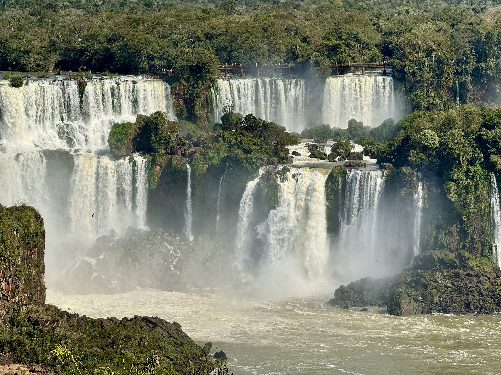
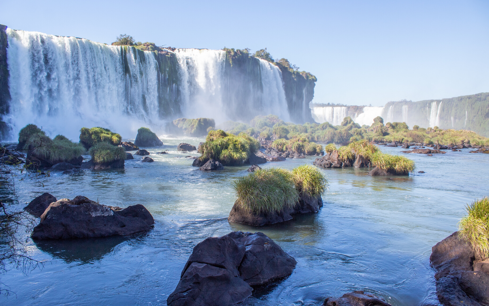
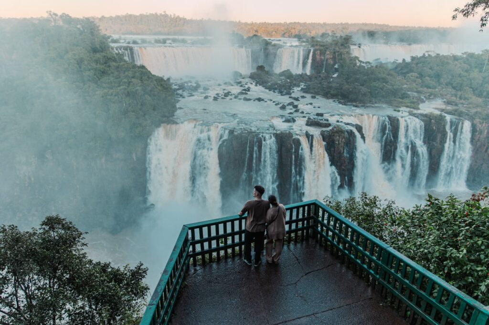

importância cultural
As Cataratas do Iguaçu formam um conjunto de cerca de 275 quedas d'água no rio Iguaçu, na fronteira entre o Brasil (Foz do Iguaçu, Paraná) e a Argentina (Misiones). Consideradas uma das Sete Maravilhas da Natureza e Patrimônio Mundial da UNESCO, elas se estendem por quase 3 quilômetros, com quedas que chegam a 80 metros de altura.

contexto histórico
As Cataratas do Iguaçu se desenvolveram no oeste do Paraná, na fronteira com a Argentina, por meio de um processo geológico de erosão que começou há cerca de 200 mil anos. O fenômeno ocorreu quando o rio Iguaçu despencou sobre um desnível de rocha basáltica, recuando quilômetros rio acima ao longo dos milênios.

impotância cultural
As Cataratas do Iguaçu, localizadas na fronteira entre o Brasil e a Argentina, são um ícone cultural e natural. Elas representam a união entre os povos da América do Sul, guardam mitos ancestrais indígenas e simbolizam a força e a beleza da biodiversidade da Mata Atlântica para o mundo.
